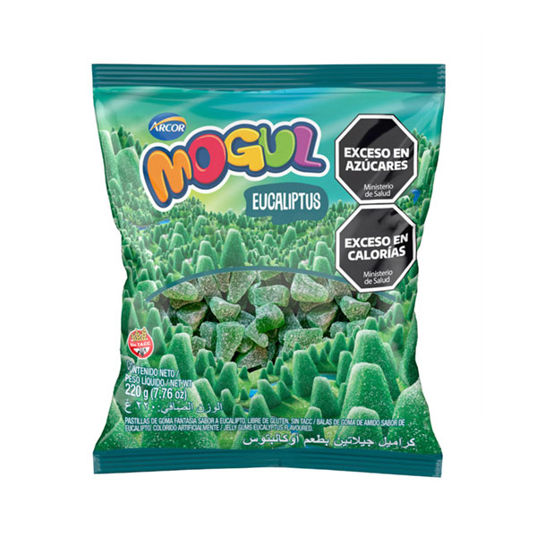

1-¿Cuál es la etiqueta principal utilizada para crear una tabla en HTML?
la etiqueta pricipal para crear una tabla es la etiqueta "table"
2-¿Qué etiqueta se utiliza para definir una fila en una tabla?
la etiqueta para definir una fila en una tabla es la etiqueta "tr"
3-¿Cuál es la etiqueta utilizada para crear una celda de encabezado en una tabla?
la etiqueta utilizada para crear una celda de encabezado es la etiqueta "th"
4-¿Cuál es la etiqueta utilizada para crear una celda de datos en una tabla?
la etiqueta utilizada para crear una celda de datos es la etiqueta "td"
5-¿Qué atributo se utiliza para especificar cuántas columnas debe abarcar una celda?
el atributo utilizado para especificar cuántas columnas va a abarcar una celda es "colspan"
6-¿Qué atributo se utiliza para especificar cuántas filas debe abarcar una celda?
el atributo que se utiliza para especificar cuántas filas va a abarcar una celda es el atributo "rowspan"
7-Si necesitamos crear una tabla con 10 filas ¿qué etiqueta y cuántas veces se debe utilizar para definir las filas?
primero vamos a utilizar la etiqueta "table" para armar la tabla. dentro de esta vamos a utilizar 10 "tr" para crear y definir las filas
practicas
👉 TABLA 1
| nombre | calorias | tipo | imagen |
| banana | 91 kcal | fruta |  |
| costillar | 296 kcal | carne |  |
| yogurt danonino | 45 kcal | lacteo |  |
| acelga | 19 kcal 100g | verdura |  |
| gomitas de eucalipto | 62 kcal | caramelo |  |
👉 TABLA 2
| pos | numero | piloto | marca | vueltas | tiempo | diferencia |
| 1° | 231 | URCERA, JOSÉ MANUEL | 25 | 39:28.539 | /- | |
| 2° | 121 | CRAPARO, ELIO | 25 | 39:29.740 | /1.201 | |
| 3° | 4 | CASTELLANO, JONATAN | 25 | 39:31.206 | / 2.667 | |
| 4° | 96 | BENVENUTI, JUAN CRUZ | 25 | 39:33.118 | / 4.579 | |
| 5° | 10 | AGUIRRE, VALENTÍN | 25 | 39:33.764 | / 5.225 | |
| 6° | 19 | CIANTINI, DIEGO | 25 | 39:37.838 | /9.299 |